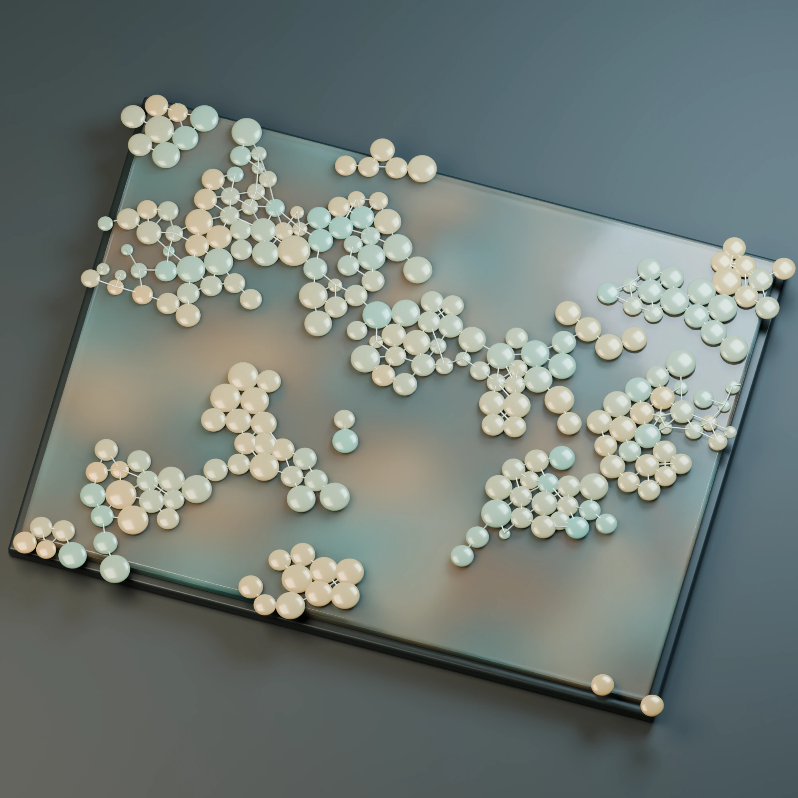
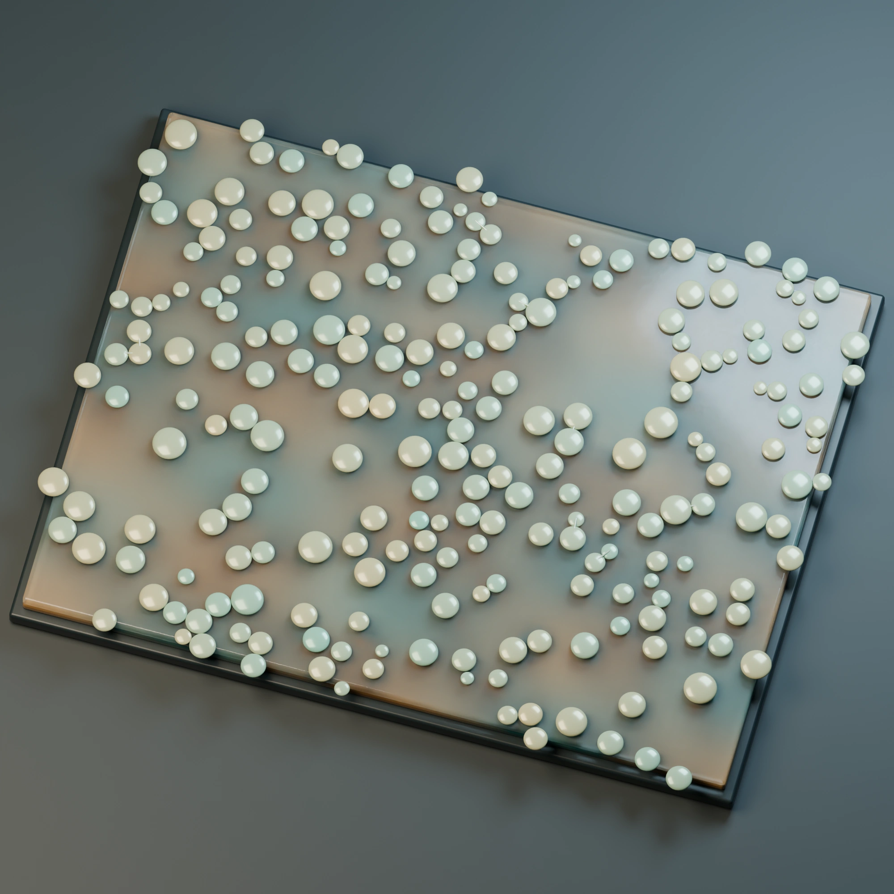

Growing bodies, paid motion, division and chemical exchange across real junctions. Watch the early connected phase, then compare it with the later, sparser populations. These are two-dimensional Julia simulations; the photographs give their measured bodies an optical depth.
Teal → amber: increasing relative import-A allocation. Bath hue shows A/B precursor balance; brightness shows total concentration with a fixed scale across each trajectory. Motion advances through saved frames without interpolation. Boundary copies respect the periodic domain.


Early dense contacts are interesting material behavior, not by themselves evidence of evolved multicellular cooperation. Later sparse contacts do not settle what this substrate could support under other ecological conditions.